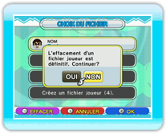

9 |
Sauvegarder |
 |

Les deux jeux ont une fonction de sauvegarde automatique. Si vous terminez un niveau, une bataille ou changez vos paramètres,
cela sera automatiquement sauvegardé. Cependant, les paramètres de jeu et les résultats des Batailles Pour effacer un fichier joueur, sélectionnez-le à l’écran de choix du joueur et appuyez sur
NOTE: si le Mii d’un joueur est effacé dans la Chaîne Mii, l’icône du joueur et ses données resteront dans le jeu.
|
 |
 |
 |